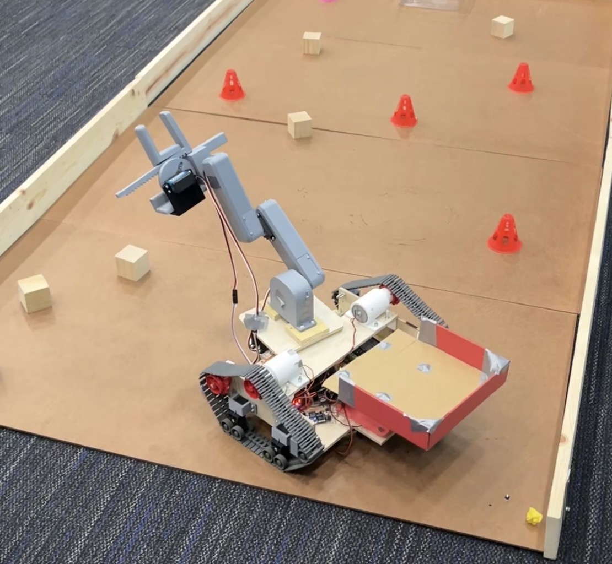

Hi! I'm Ron Pascual.
I'm a Computer Engineering student at the University of California, Irvine.
About Me
I'm Ron Pascual, a Computer Engineering student at the University of California, Irvine with experience spanning both software and hardware development. I enjoy building projects that combine both worlds and am particularly interested in developing practical, interactive systems.
My software experience includes developing the gesture-control logic for a robotic arm in C, where I worked closely with the hardware team to integrate gyroscope and accelerometer data and ensure the system responded accurately to user movements. I've also led a six-person team in developing an ASCII-based chess game for a class project and served as a programming lead for a video game team developing a rhythm game using the Godot Engine.
My experience in hardware includes designing a Raspberry Pi-based smart home controller that uses multiple sensors to monitor time, temperature, light levels, and nearby motion, with custom alerts sent to my phone. I'm currently exploring another Raspberry Pi project: building my own custom handheld gaming console.
Outside of engineering, I'm passionate about video games and music. I can play the piano, saxophone, and guitar, and I've also produced original music for a friend's video game. I enjoy learning through hands-on projects, adapting to new challenges, and figuring things out as I go. While I'm still exploring exactly where I want to take my career, I'm excited to continue building, learning, and finding opportunities to apply my skills in new ways.
My Projects

Gesture-Controlled Robot Arm
I developed the gesture-control logic in C for a robotic arm controlled through a sensor-equipped glove. Integrated gyroscope and accelerometer data and collaborated with the hardware team to ensure accurate responses to user movements.
View Project ->
Smart Home Controller
I designed a Raspberry Pi-based smart home controller using multiple sensors to monitor time, temperature, light levels, and nearby motion, with custom alerts sent to a mobile device.
View Project ->